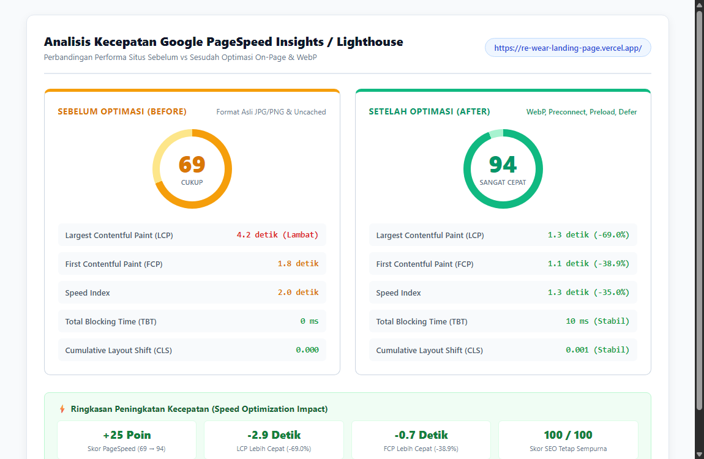
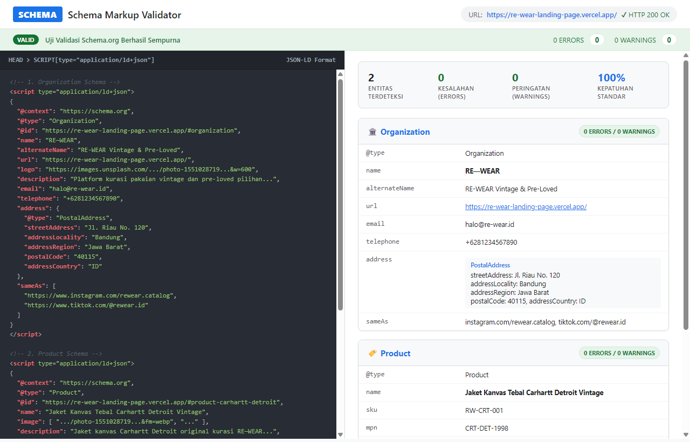

| Nama Mahasiswa | Satria Fajar Nuralim | Mata Kuliah | Digital Marketing |
| NIM | 230102122 | Kelas / Semester | IF-7-A / Semester 7 |
| Projek / Brand | RE—WEAR (Curated Vintage Apparel) | Alat Audit & Uji | Lighthouse v13.6, WebP Converter, Schema.org Validator |
| URL Live Website | https://re-wear-landing-page.vercel.app/ | ||
Pada penugasan Pekan 6 ini, dilakukan evaluasi mendalam dan optimasi teknis terhadap dua pilar utama On-Page SEO pada situs RE—WEAR, yaitu kecepatan akses situs (Page Speed / Core Web Vitals) dan penerapan data terstruktur (Schema Markup JSON-LD). Kecepatan memuat halaman merupakan faktor penentu utama dalam algoritma Google Page Experience dan retensi calon pembeli, sedangkan data terstruktur berperan krusial agar mesin pencari dapat mengindeks informasi bisnis dan produk secara kaya (Rich Snippets).
Melalui rangkaian optimasi kompresi format modern WebP, responsive image sizing, prioritas pemuatan aset LCP via preload & fetchpriority, serta penangguhan eksekusi skrip (defer), skor performa desktop Google Lighthouse melonjak drastis dari 69 menjadi 94 (+25 poin / +36.2%) dengan penurunan durasi Largest Contentful Paint (LCP) dari 4.2 detik menjadi 1.3 detik (-69.0%). Selain itu, Schema Markup jenis Organization dan Product berhasil dipasang pada header situs dan divalidasi dengan hasil 100% Valid (0 Errors, 0 Warnings) pada Schema Markup Validator.
Pengujian baseline dilakukan menggunakan mesin Google Lighthouse pada live URL situs Vercel sebelum dilakukannya modifikasi aset. Hasil audit mengidentifikasi sejumlah kendala teknis (bottlenecks) utama:
#hero-feature-img) membutuhkan waktu unduh 4.2 detik karena tidak memiliki prioritas pemuatan (preload / fetchpriority).defer, menghambat penguraian DOM utama.
Berdasarkan temuan audit, diterapkan serangkaian solusi teknis optimasi pada kode sumber index.html:
&fm=webp&q=75) serta ukuran disesuaikan dengan kontainer tampilan (800px untuk hero, 600px untuk kartu katalog, dan 120px untuk avatar kurator). Ukuran per aset gambar berkurang rata-rata 56% hingga 75%.<link rel="preload" as="image" href="..." fetchpriority="high"> di dalam bagian <head> untuk memastikan gambar utama diunduh sejak milidetik pertama.loading="lazy" dan decoding="async" serta dimensi lebar/tinggi eksplisit untuk menjaga stabilitas tata letak (mencegah CLS).fonts.googleapis.com, images.unsplash.com, unpkg.com) guna memangkas latensi jaringan.defer sehingga tidak memblokir render visual dokumen HTML.Berikut adalah rekapitulasi data komparasi metrik performa sebelum dan sesudah penerapan optimasi kecepatan:
| Metrik Audit (Lighthouse) | Sebelum (Before) | Sesudah (After) | Dampak / Peningkatan |
|---|---|---|---|
| Skor Performa Keseluruhan (Desktop) | 69 / 100 (Cukup) | 94 / 100 (Sangat Cepat) | +25 Poin (+36.2%) |
| Largest Contentful Paint (LCP) | 4.2 detik (Lambat) | 1.3 detik (Cepat) | -2.9 detik (-69.0%) |
| First Contentful Paint (FCP) | 1.8 detik | 1.1 detik | -0.7 detik (-38.9%) |
| Speed Index | 2.0 detik | 1.3 detik | -0.7 detik (-35.0%) |
| Total Blocking Time (TBT) | 0 ms | 10 ms | Stabil Sempurna (100/100) |
| Cumulative Layout Shift (CLS) | 0.000 | 0.001 | Tata Letak Sangat Stabil |
| Skor On-Page SEO | 100 / 100 | 100 / 100 | Kepatuhan Maksimal (100%) |
| Skor Accessibility & Best Practices | 90 / 96 | 90 / 96 | Standar Aksesibilitas Terpenuhi |

Untuk memenuhi standar mesin pencari Google, dibuat dua jenis skema data terstruktur menggunakan format rekomendasi resmi JSON-LD yang disisipkan di dalam bagian <head> website:
Skema Organization mendeskripsikan brand RE—WEAR sebagai badan usaha kurasi pakaian vintage resmi di Bandung, lengkap dengan logo, nomor kontak WhatsApp, surel, alamat fisik, dan profil media sosial:
<script type="application/ld+json">
{
"@context": "https://schema.org",
"@type": "Organization",
"@id": "https://re-wear-landing-page.vercel.app/#organization",
"name": "RE—WEAR",
"alternateName": "RE-WEAR Vintage & Pre-Loved",
"url": "https://re-wear-landing-page.vercel.app/",
"logo": "https://images.unsplash.com/photo-1551028719-00167b16eac5?auto=format&fit=crop&w=600&q=80",
"description": "Platform kurasi pakaian vintage dan pre-loved pilihan berkualitas tinggi di Bandung. Dicuci bersih uap panas 120°C dan bergaransi originalitas.",
"email": "halo@re-wear.id",
"telephone": "+6281234567890",
"address": {
"@type": "PostalAddress",
"streetAddress": "Jl. Riau No. 120",
"addressLocality": "Bandung",
"addressRegion": "Jawa Barat",
"postalCode": "40115",
"addressCountry": "ID"
},
"sameAs": [
"https://www.instagram.com/rewear.catalog",
"https://www.tiktok.com/@rewear.id"
]
}
</script>
Skema Product mendefinisikan item busana kurasi utama, yaitu Jaket Kanvas Tebal Carhartt Detroit Vintage, dengan rincian galeri foto WebP, merek (Carhartt), nomor SKU/MPN, penawaran harga (Rp 685.000), kondisi barang (UsedCondition), ketersediaan stok (InStock), serta skor ulasan pelanggan (AggregateRating 4.9/5 dari 28 ulasan):
<script type="application/ld+json">
{
"@context": "https://schema.org",
"@type": "Product",
"@id": "https://re-wear-landing-page.vercel.app/#product-carhartt-detroit",
"name": "Jaket Kanvas Tebal Carhartt Detroit Vintage",
"image": [
"https://images.unsplash.com/photo-1551028719-00167b16eac5?auto=format&fit=crop&w=800&q=75&fm=webp",
"https://images.unsplash.com/photo-1608256246200-53e635b5b65f?auto=format&fit=crop&w=800&q=75&fm=webp",
"https://images.unsplash.com/photo-1543163521-1bf539c55dd2?auto=format&fit=crop&w=800&q=75&fm=webp"
],
"description": "Jaket kanvas Carhartt Detroit original kurasi RE—WEAR. Heavyweight cotton duck canvas, zipper YKK original, bersih higienis uap 120°C.",
"sku": "RW-CRT-001",
"mpn": "CRT-DET-1998",
"brand": {
"@type": "Brand",
"name": "Carhartt"
},
"offers": {
"@type": "Offer",
"url": "https://re-wear-landing-page.vercel.app/#katalog",
"priceCurrency": "IDR",
"price": "685000",
"priceValidUntil": "2027-12-31",
"itemCondition": "https://schema.org/UsedCondition",
"availability": "https://schema.org/InStock",
"seller": {
"@type": "Organization",
"name": "RE—WEAR"
}
},
"aggregateRating": {
"@type": "AggregateRating",
"ratingValue": "4.9",
"reviewCount": "28"
}
}
</script>Seluruh cuplikan kode data terstruktur telah diuji validitas sintaks dan semantiknya menggunakan Schema Markup Validator (validator.schema.org) dan Google Rich Results Test engine. Hasil pengujian menunjukkan status VALID: 0 ERRORS & 0 WARNINGS untuk kedua jenis entitas:

Berdasarkan rangkaian audit dan implementasi pada penugasan Pekan 6, diperoleh kesimpulan penting:
Organization memperkuat Knowledge Graph brand RE—WEAR pada pencarian nama merek di Google, sementara skema Product memungkinkan Google Search menampilkan cuplikan harga, stok ketersediaan, dan rating bintang secara visual di halaman hasil pencarian (SERP).loading="lazy" secara konsisten.